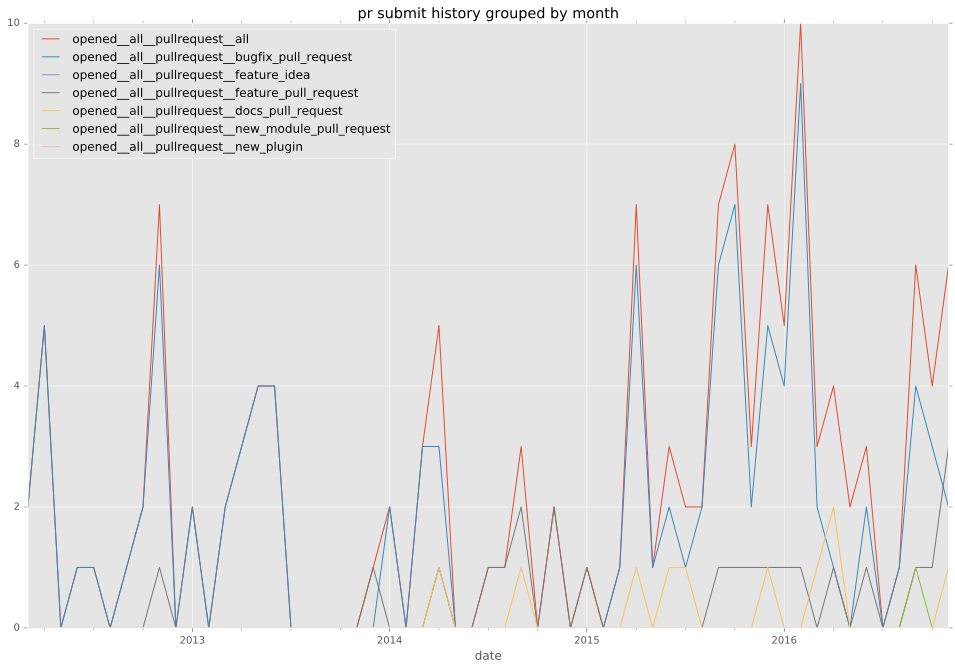
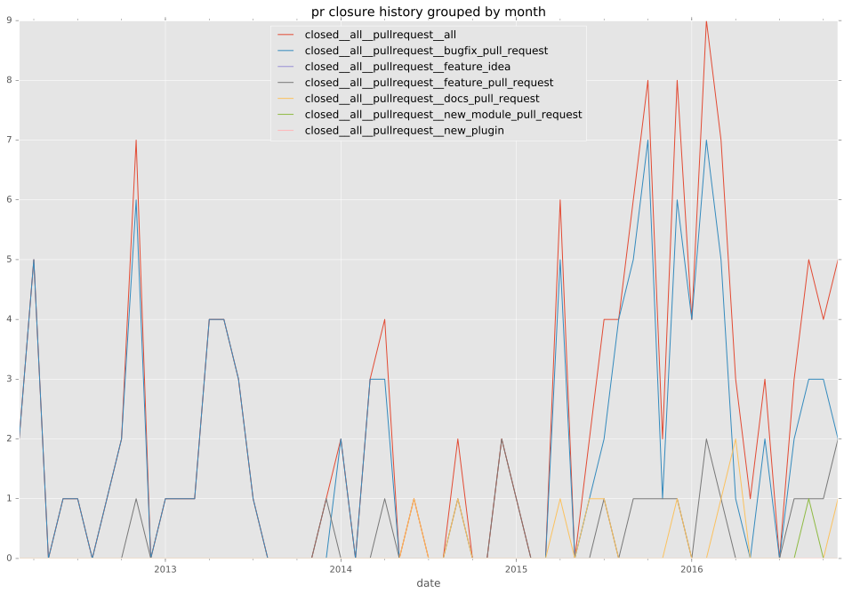

authors
maintainers
- ansible
contributors
- jpmens : 10 commits
- mpdehaan : 6 commits
- bcoca : 3 commits
- willthames : 2 commits
- vladimirmartsul : 1 commits
- mikeputnam : 1 commits
- jimi-c : 1 commits
- geerlingguy : 1 commits
- gaomd : 1 commits
- follower : 1 commits
total issue counts
unknown: 1
feature pull request: 32
docs report: 2
pullrequest: 205
docs pull request: 10
bugfix pull request: 161
feature idea: 4
issue: 20
bug report: 15
issue history
pullrequest history


days open by issue type
bugfix pull request
count: 243
std: 29.2975376614
min: 0
max: 239
median: 0.0
mean: 8.329218107
all
count: 314
std: 80.5631038844
min: 0
max: 654
median: 0.0
mean: 23.2292993631
pullrequest
count: 0
std: nan
min: nan
max: nan
median: nan
mean: nan
docs pull request
count: 15
std: 12.5800295253
min: 0
max: 50
median: 2.0
mean: 5.6
docs report
count: 1
std: nan
min: 0
max: 0
median: 0.0
mean: 0.0
feature pull request
count: 39
std: 173.191363275
min: 0
max: 654
median: 18.0
mean: 100.743589744
feature idea
count: 2
std: 100.409162928
min: 119
max: 261
median: 190.0
mean: 190.0
issue
count: 0
std: nan
min: nan
max: nan
median: nan
mean: nan
bug report
count: 13
std: 157.210906844
min: 0
max: 463
median: 0.0
mean: 67.4615384615
closures grouped by total days open